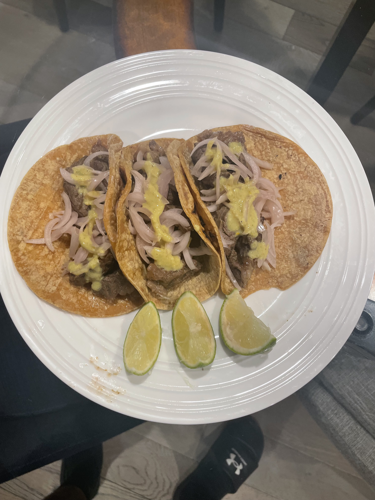
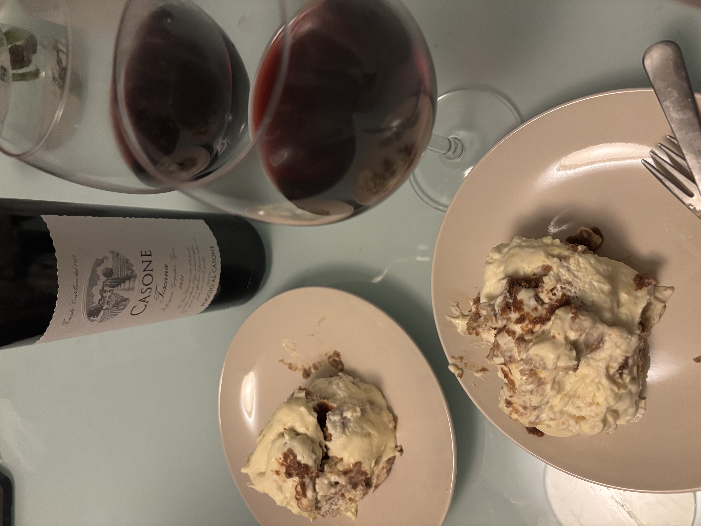

Welcome to My Cooking Website
Hi, my name is Arvin and this is my cooking website! I've been cooking for a long time, and making dishes from scratch or learning a new technique is still one of my favorite ways to spend an evening. This site will highlight some of my proudest recipes and some fun things I've learned along the way.
I started cooking when I was in middle school by helping my family in the kitchen or making myself some snacks after school when my parents weren't home. What began as a way to feed myself slowly turned into a real hobby. Over the past decade I've learned that becoming a good home chef is less about following fancy recipes, but instead about learning techniques, flavors, and building intuition - knowing when to add more salt, knowing when a pan is hot enough, and being patient enough to let flavors develop.
What I enjoy most is the mix of developing creativity and a valuable skillset. Most nights I cook something familiar that I could make with my eyes closed. Some nights I try a dish I've never made before without a recipe and see how it goes. I also love cooking for other people, whether that's a dinner party or a date night, because sharing a meal is the best part of making one. I also think food has the power of connecting people together more than anything else.
Between work and school, cooking is how I slow down, practice being present, and connect with others. Head over to My Kitchen to see what I cook most often.


